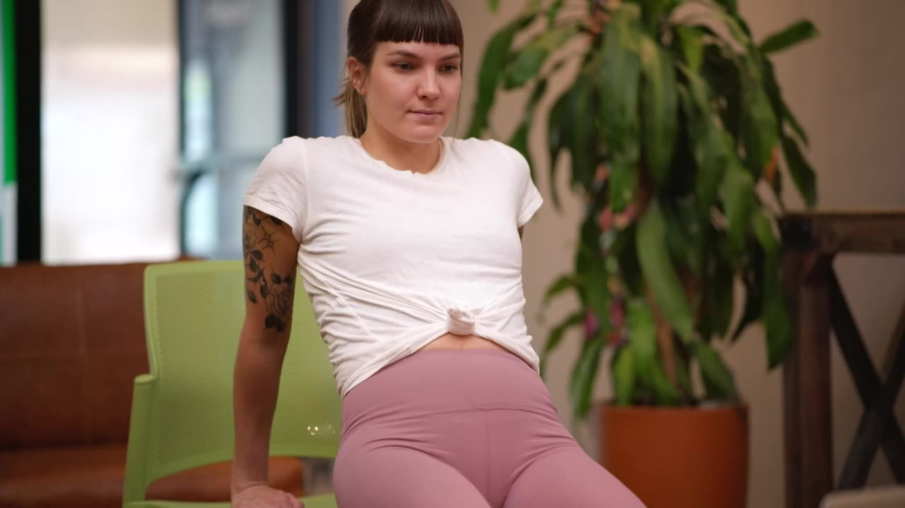
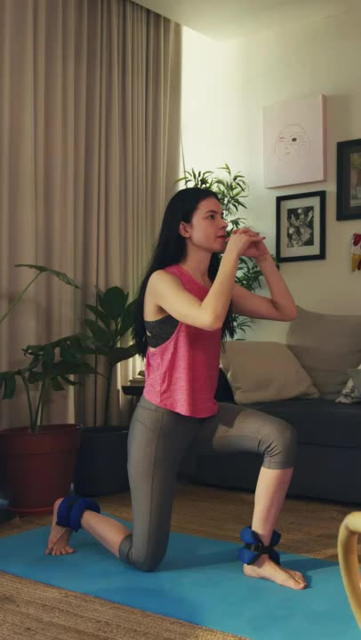
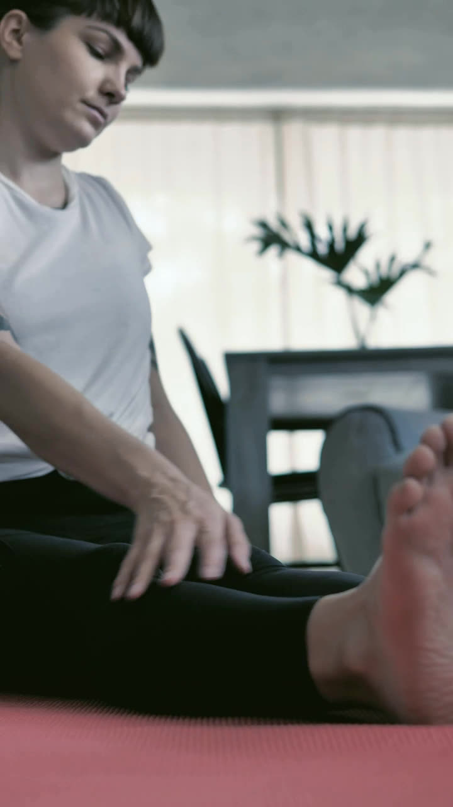

Força · 12 min

Aula guiadaMobilidade

Sala pequenaSem equipamento

RecuperaçãoClareira
Abra espaço
para o seu treino.
Aulas conduzidas por professores reais, no tempo que você tiver. Comece com 12 minutos na sua sala.
12 minsem equipamentosala pequena
Direção B — Cadência